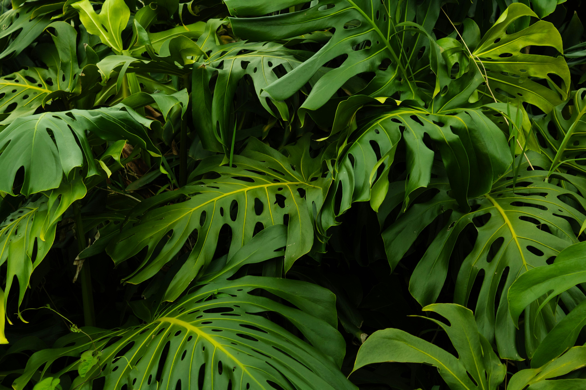

Concept
This site is built around small, curated sets rather than endless feeds. Themes keep collections cohesive, and short captions provide context while keeping the focus on the images.
Photo Gallery is a calm place to view themed photography. The site emphasizes readability, consistent alignment, and predictable navigation so images remain the focus on both mobile and desktop.

This site is built around small, curated sets rather than endless feeds. Themes keep collections cohesive, and short captions provide context while keeping the focus on the images.
Collections are organized by clear visual rules such as light direction, palette, geometry, texture, and atmosphere. The goal is fast scanning with enough structure to make each set feel intentional.
The interface prioritizes readability, consistent spacing, and calm contrast. Images are optimized for quick loading, and interactions stay minimal to reduce visual noise.

The project remains a static site without databases or external data. Future improvements can expand collections, refine captions, and adjust layout details based on wireframes while keeping the structure simple and maintainable.